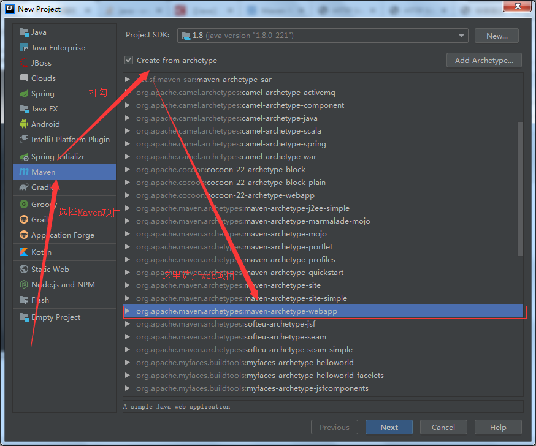
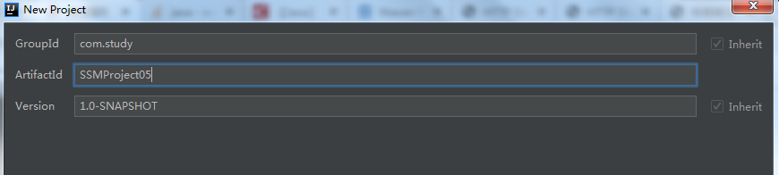
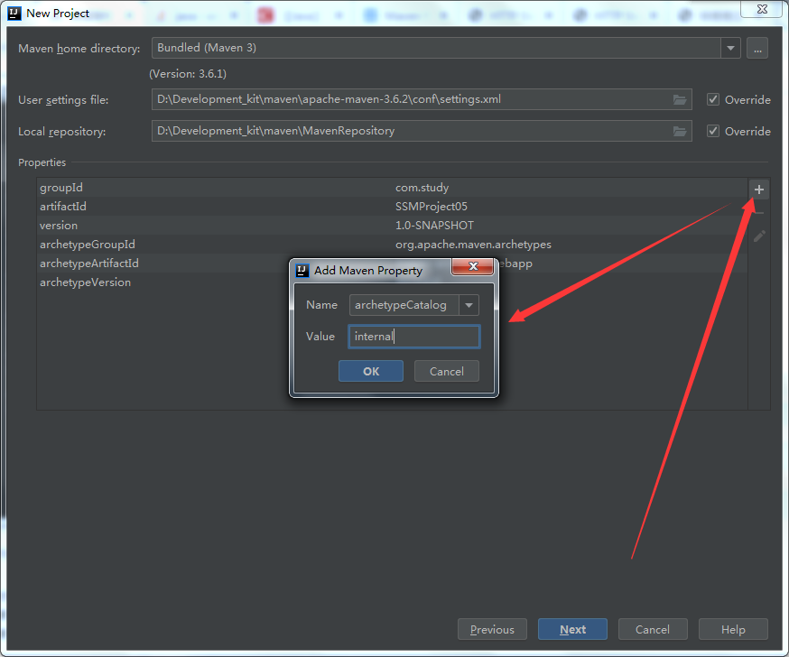
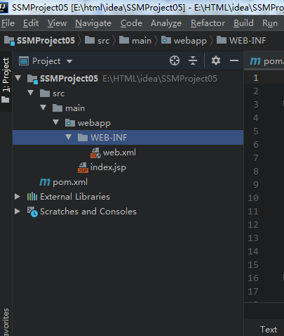
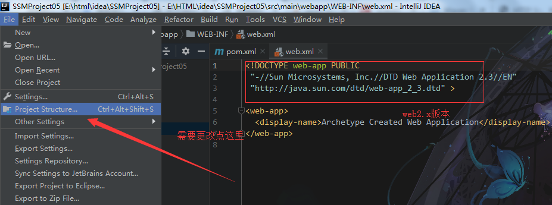
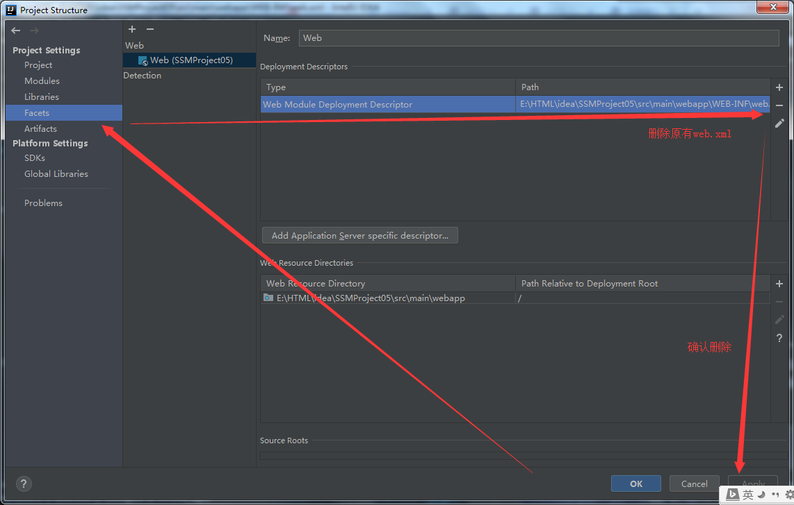
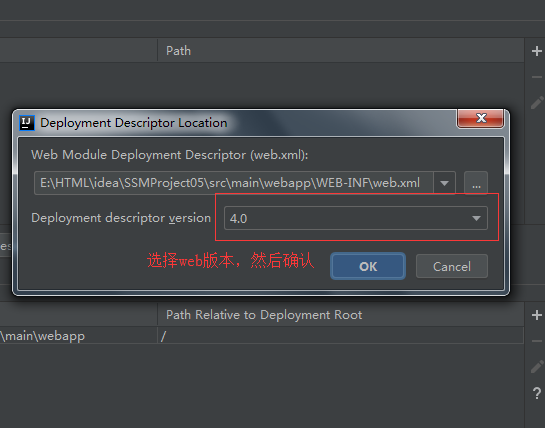
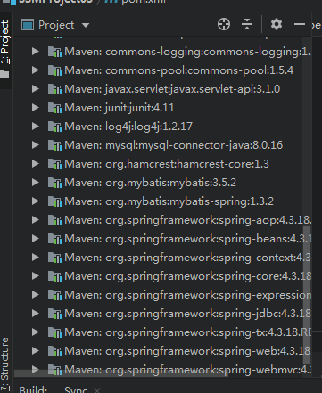
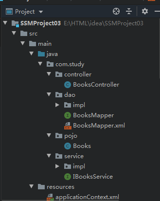

spring的jar(包含tx)、springmvc的jar、mybatis.jar、mybatis-spring.jar、tomcat、commons-dbcp.jar等


这里选择如下图，否则Maven创建可能不成功 Name：archetypeCatalog Value：internal

然后一直next，最后Maven项目创建成功，如下图




这样web的版本就更改了
<dependencies>
<dependency>
<groupId>junit</groupId>
<artifactId>junit</artifactId>
<version>4.11</version>
<scope>test</scope>
</dependency>
<!--springmvc-->
<!-- https://mvnrepository.com/artifact/org.springframework/spring-webmvc -->
<dependency>
<groupId>org.springframework</groupId>
<artifactId>spring-webmvc</artifactId>
<version>4.3.18.RELEASE</version>
</dependency>
<!-- https://mvnrepository.com/artifact/javax.servlet/javax.servlet-api -->
<dependency>
<groupId>javax.servlet</groupId>
<artifactId>javax.servlet-api</artifactId>
<version>3.1.0</version>
<scope>provided</scope>
</dependency>
<!--mybatis-->
<!--Mysql-->
<dependency>
<groupId>mysql</groupId>
<artifactId>mysql-connector-java</artifactId>
<version>8.0.16</version>
</dependency>
<!--Mybatis-->
<dependency>
<groupId>org.mybatis</groupId>
<artifactId>mybatis</artifactId>
<version>3.5.2</version>
</dependency>
<!--Log4j-->
<!-- https://mvnrepository.com/artifact/log4j/log4j -->
<dependency>
<groupId>log4j</groupId>
<artifactId>log4j</artifactId>
<version>1.2.17</version>
</dependency>
<!--dbcp-->
<dependency>
<groupId>commons-dbcp</groupId>
<artifactId>commons-dbcp</artifactId>
<version>1.4</version>
</dependency>
<!--Mybatis与Spring整合jar-->
<dependency>
<groupId>org.mybatis</groupId>
<artifactId>mybatis-spring</artifactId>
<version>1.3.2</version>
</dependency>
<!--增加事务支持-->
<!-- https://mvnrepository.com/artifact/org.springframework/spring-tx -->
<dependency>
<groupId>org.springframework</groupId>
<artifactId>spring-tx</artifactId>
<version>4.3.18.RELEASE</version>
</dependency>
<!-- https://mvnrepository.com/artifact/org.springframework/spring-jdbc -->
<dependency>
<groupId>org.springframework</groupId>
<artifactId>spring-jdbc</artifactId>
<version>4.3.18.RELEASE</version>
</dependency>
</dependencies>
注意：IDEA中的Maven项目需要指定读取资源路径，否则可能无法读取资源（.properties、Mapper）
<build>
<resources>
<!--指定xml文件位置-->
<resource>
<directory>src/main/java</directory>
<includes>
<include>**/*.properties</include>
<include>**/*.xml</include>
</includes>
<!--这里写成true会造成编译注释错误-->
<filtering>false</filtering>
</resource>
<!--指定xml文件位置-->
<resource>
<directory>src/main/resource</directory>
<includes>
<include>**/*.properties</include>
<include>**/*.xml</include>
</includes>
<!--这里写成true会造成编译注释错误-->
<filtering>false</filtering>
</resource>
</resources>
</build>


6.1、Mybatis-config.xml
<?xml version="1.0" encoding="UTF-8" ?>
<!DOCTYPE configuration
PUBLIC "-//mybatis.org//DTD Config 3.0//EN"
"http://mybatis.org/dtd/mybatis-3-config.dtd">
<configuration>
<!--增加日志的支持-->
<settings>
<setting name="logImpl" value="log4j"/>
</settings>
<!--取别名-->
<typeAliases>
<package name="com.study.pojo"/>
</typeAliases>
<mappers>
<package name="com.study.dao"/>
</mappers>
</configuration>
6.2、spring-dao.xml
<?xml version="1.0" encoding="UTF-8"?>
<beans xmlns="http://www.springframework.org/schema/beans"
xmlns:xsi="http://www.w3.org/2001/XMLSchema-instance"
xmlns:context="http://www.springframework.org/schema/context"
xsi:schemaLocation="http://www.springframework.org/schema/beans
http://www.springframework.org/schema/beans/spring-beans.xsd
http://www.springframework.org/schema/context
http://www.springframework.org/schema/context/spring-context.xsd
">
<context:component-scan base-package="com.study.dao.impl"/>
<context:property-placeholder location="classpath:db.properties"/>
<!--配置数据源-->
<bean id="dataSource" class="org.apache.commons.dbcp.BasicDataSource">
<property name="driverClassName" value="${jdbc.driver}"/>
<property name="url" value="${jdbc.url}"/>
<property name="username" value="${jdbc.username}"/>
<property name="password" value="${jdbc.password}"/>
</bean>
<!--生成sqlsessionfactory-->
<bean id="sqlSessionFactory" class="org.mybatis.spring.SqlSessionFactoryBean">
<property name="dataSource" ref="dataSource"/>
<property name="configLocation" value="classpath:mybatis-config.xml"/>
</bean>
<!--生成方法-->
<bean id="sqlSession" class="org.mybatis.spring.SqlSessionTemplate">
<constructor-arg index="0" ref="sqlSessionFactory"/>
</bean>
</beans>
6.3、spring-service.xml
<?xml version="1.0" encoding="UTF-8"?>
<beans xmlns="http://www.springframework.org/schema/beans"
xmlns:xsi="http://www.w3.org/2001/XMLSchema-instance"
xmlns:context="http://www.springframework.org/schema/context"
xsi:schemaLocation="http://www.springframework.org/schema/beans
http://www.springframework.org/schema/beans/spring-beans.xsd
http://www.springframework.org/schema/context
http://www.springframework.org/schema/context/spring-context.xsd
">
<import resource="spring-dao.xml"/>
<context:component-scan base-package="com.study.service.impl"/>
<bean id="transactionManager" class="org.springframework.jdbc.datasource.DataSourceTransactionManager">
<property name="dataSource" ref="dataSource"/>
</bean>
</beans>
6.4、spring-mvc.xml
<?xml version="1.0" encoding="UTF-8"?>
<beans xmlns="http://www.springframework.org/schema/beans"
xmlns:xsi="http://www.w3.org/2001/XMLSchema-instance"
xmlns:mvc="http://www.springframework.org/schema/mvc"
xmlns:context="http://www.springframework.org/schema/context"
xsi:schemaLocation="http://www.springframework.org/schema/beans
http://www.springframework.org/schema/beans/spring-beans.xsd
http://www.springframework.org/schema/mvc
http://www.springframework.org/schema/mvc/spring-mvc.xsd
http://www.springframework.org/schema/context
http://www.springframework.org/schema/context/spring-context.xsd
">
<!--配置扫描器-->
<context:component-scan base-package="com.study.controller"/>
<mvc:annotation-driven/>
<!--静态-->
<mvc:default-servlet-handler/>
<bean class="org.springframework.web.servlet.view.InternalResourceViewResolver">
<property name="prefix" value="/WEB-INF/jsp/"/>
<property name="suffix" value=".jsp"/>
</bean>
</beans>
6.5、applicationContext.xml
<?xml version="1.0" encoding="UTF-8"?>
<beans xmlns="http://www.springframework.org/schema/beans"
xmlns:xsi="http://www.w3.org/2001/XMLSchema-instance"
xsi:schemaLocation="http://www.springframework.org/schema/beans
http://www.springframework.org/schema/beans/spring-beans.xsd
">
<import resource="spring-mvc.xml"/>
<import resource="spring-dao.xml"/>
<import resource="spring-service.xml"/>
</beans>
6.6、db.properties（使用的dbcp数据连接池，不整合时候可以不加jdbc但是整合后不在前面加上jdbc就会出现错误）
jdbc.driver=com.mysql.cj.jdbc.Driver jdbc.url=jdbc:mysql://localhost:3306/自己的数据库名字?useUnicode=true&characterEncoding=utf-8&autoReconnect=true&failOverReadOnly=false jdbc.username=账户 jdbc.password=密码
6.7、log4j.properties（这个可以网上找）
log4j.rootLogger=DEBUG,Console log4j.appender.Console=org.apache.log4j.ConsoleAppender log4j.appender.Console.layout=org.apache.log4j.PatternLayout log4j.appender.Console.layout.ConversionPattern=%d [%t] %-5p [%c] - %m%n log4j.logger.org.apache=INFO
提示：
Controller层的注解为@Controller
Service层的注解为 @Service
Dao层的注解为 @Repository
建议：尽量使用Maven进行导包，如果手动导包可能会出现一些莫名的错误
Ⅰ、在创建Maven项目的时候有两点需要注意：①.需要指定资源文件路径、也就是在pom.xml文件的build中添加指定。②.在进行导包的时候尽量使用Maven进行导包
Ⅱ、注解的使用，不同的层使用不同的注解（@Controller、@Service、@Repository），但是这些注解都来自同一个父注解，可以自行网上查看
Ⅲ、关于在配置文件中必须配置的属性（大概）：①.DispatcherServlet（SpringMVC的核心） ②、dataSource(数据源)③、DataSourceTransactionManager（事务支持，没这个整合会出错）④、SqlSessionFactoryBean（获取sqlsessionFactory）⑤、SqlSessionTemplate
@RequestMapping(value = "/a",produces = "application/json;charset=utf- 8")
<!--配置扫描器-->
<context:component-scan base-package="com.study.controller"/>
<mvc:annotation-driven>
<!--解决Json乱码问题-->
<mvc:message-converters register-defaults="true">
<bean class="org.springframework.http.converter.StringHttpMessageConverter">
<property name="supportedMediaTypes" value="text/html;charset=UTF-8" />
</bean>
<bean id="jacksonMessageConverter" class="org.springframework.http.converter.json.MappingJackson2HttpMessageConverter">
<property name="objectMapper">
<bean class="org.springframework.http.converter.json.Jackson2ObjectMapperFactoryBean">
<property name="failOnEmptyBeans" value="false"/>
</bean>
</property>
</bean>
</mvc:message-converters>
</mvc:annotation-driven>
附：有问题欢迎大家指出